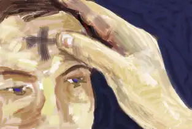

{kind=link}
Following my own self-imposed sacrifices, I will be turning off the comments function on my posts. Just a reminder: this isn’t intended to be a sacrifice for you, but a way for me to turn my attention solely toward the giving aspects of this blog. However, if something I say here requires a response that can’t wait until Easter, I am leaving my email address in a conspicuous place. Feel free to use that instead.
By the way, I’m not the first blogger to turn off her comments during Lent. For more reflection on this, see Jennifer’s post here.
I will miss your “voices” in the coming weeks, but I truly look forward to hearing from you again on or around Easter. I very much appreciate all my readers, so hope you’ll stick around during my silence! April 12 will be here sooner than we can imagine.
(Looking at clock…) Aha, it is after midnight now, so I will end with a Lent-like thought from the recently oft-quoted Redeemed by Heather King. This one seems particular appropriate given the above post, and I love what it says:
“My spiritual giant of a friend Maudie was saying one day that when we’re focused on what others can give us — adulation, approval — and they don’t (which is basically always), then it puts us in a constant state of “disappointment and longing.” Whereas if we focus not on what the world can give us but what we can bring to it, things are always set right. Hers is a message I can never hear enough: that everything we really long for is always right here, right now, because it is always in our power to orient our hearts toward God, toward giving instead of getting. The whole secret of life is not minding what happens…and while we’re not minding, giving. That’s what creates the space in which, invisibly, imperceptibly — while we “slumber” by attending to other people’s wounds — our own incurable wounds are healed.” (pages 134-5)